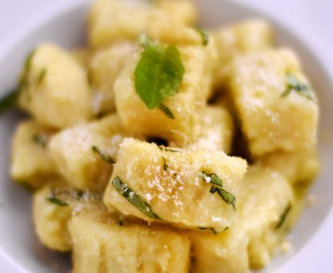

Gnocchis maison
Ingrédients
6×
- 1 kg de pommes de terre
- 150 g de beurre
- 1 oeuf
- muscade
- 1 c. à s. d'huile d'olive
- sel
- poivre
- 400 g de farine
- 100 g de parmesan râpé
- basilic

Préparation
Étape 1
Éplucher 1 kg de pommes de terre (bintje) et les cuire à l’eau. Les passer au moulin à légumes et incorporer 50 g de beurre en petits morceaux.
Étape 2
Dans une jatte, mélanger 1 oeuf, de la muscade, 1 c. à s. d'huile d'olive, du sel et du poivre. Ajouter les pommes de terre et 400 g de farine, puis pétrir jusqu’à obtenir une pâte bien lisse.
Étape 3
Diviser la pâte en 4 et former des rouleaux longs et fins. Les fariner, les couper en tronçons de 1cm et les strier à la fourchette.
Étape 4
Pocher les gnocchis dans une grande quantité d’eau salée frémissante. Les égoutter dès qu’ils remontent à la surface.
Étape 5
Fondre 100 g de beurre et en arroser les gnocchis. Ajouter 100 g de parmesan râpé et du basilic haché, poivrer, mélanger et servir aussitôt.
Résumé
1 kg de pommes de terre
50 g de beurre
cuire passer au moulin à légumes
1 oeuf
muscade
1 c. à s. d'huile d'olive
sel
poivre
400 g de farine
pétrir
former des rouleaux strier
Pocher
100 g de beurre
100 g de parmesan râpé
basilic
Fondre